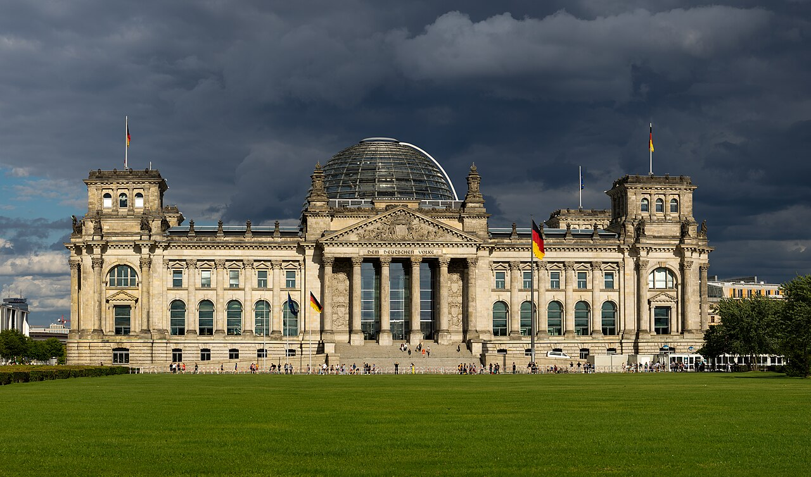

Deepavali 2026: Lichterfest in Berlin, Bayern und Düsseldorf
Tempel und Vereine feierten am 8. November, Düsseldorf folgt am 15.

Tempel und Vereine feierten am 8. November, Düsseldorf folgt am 15.

Die Antwort der Bundesregierung zählt nach Zielstaat und Staatsangehörigkeit.
Stand 9. November 2026, aus den Programmen der Kinos.
11 Kinos in Deutschland
Berlin, Bremen, Chemnitz, Dortmund, Düsseldorf und 6 weitere Städte
2 Kinos in Deutschland
Gütersloh und Ravensburg
Kino Claudia, Kloten
Sonntag, 15. November, 17 Uhr

Tempel
Hindu-Tempel
Berlin
Berlin, Deutschland
Verein
Tamilschule
Aarau
Aargau, Schweiz
Business
Restaurant und Imbiss
Bremen
Bremen, Deutschland